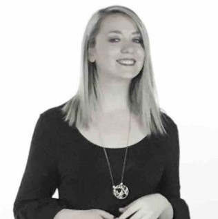

<div class="container">
    <div class="row">
        <div id="speaker-detail" class="col-lg-8 col-lg-offset-3">
            <div class="row">
                <button title="Kapat (Esc)" type="button" class="mfp-close">×</button>
                <div class="col-md-4 col-lg-4">
                    <br />
                </div>
                <div class="col-md-8 col-lg-8">
                    <h2>Merve Ermemiş - FNSS Savunma Sistemleri A.Ş.</h2>
                    <h3>Industrial Psychologist, Professional Coach, HR Specialist</h3>
                    <p>Bilkent Üniversitesi Psikoloji bölümünden mezun olan Merve Ermemiş, yüksek lisans eğitimini Londra'da Endüstriyel ve Örgütsel Psikoloji alanında tamamlamıştır. Eğitiminin ardından iş hayatına Koç Holding bünyesinde İnsan Kaynakları Uzmanı olarak başlamıştır. 2014 yılı itibari ile de kariyerine FNSS Savunma Sistemleri'nde Organizasyonel Gelişim Uzmanı ve Profesyonel Koç olarak devam etmektedir. Bununla birlikte 2 yıldır Bilkent Üniversitesi Psikoloji bölümünde Sosyal Psikoloji, Endüstriyel Psikoloji dersleri vermektedir. İlgi alanları seçme ve yerleştirme, liderlik, eğitim ve gelişim. <br />www.linkedin.com/in/merve­ermemis­32688134</p> </div>
            </div>
        </div>
    </div>
</div>